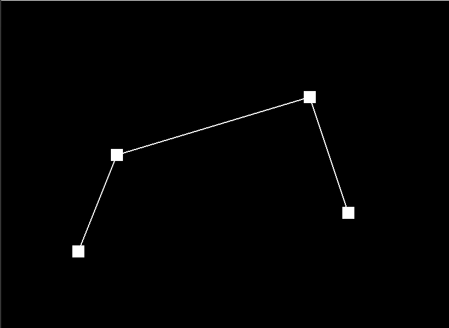
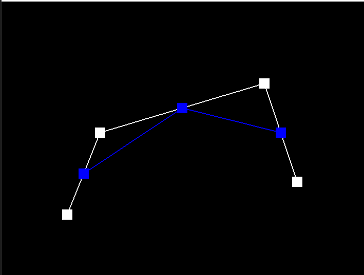
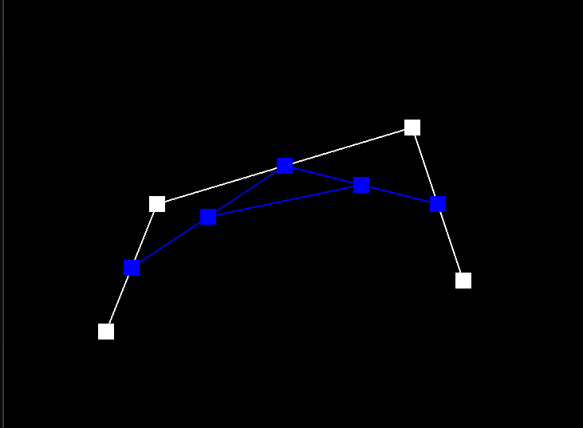
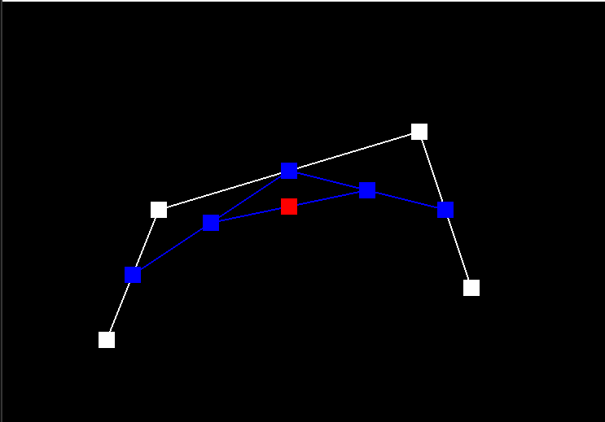
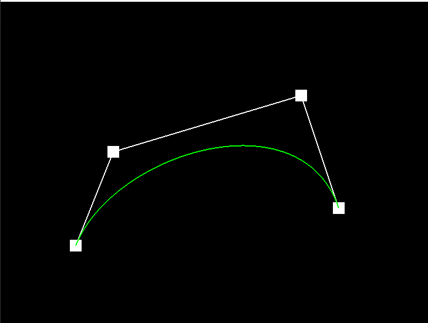
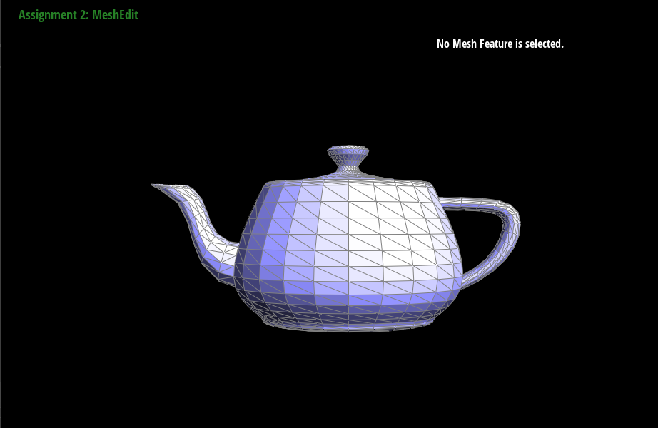
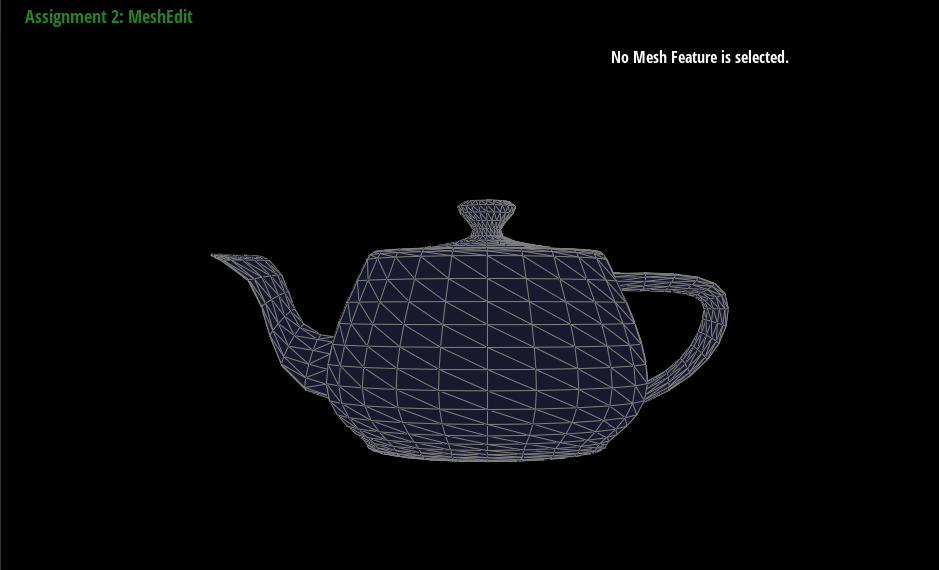

Overview
YOUR RESPONSE GOES HERE
Section I: Bezier Curves and Surfaces
Part 1: Bezier Curves with 1D de Casteljau Subdivision
De Casteljau's algorithm is a recursive method used to evaluate points on a Bezier curve. It works by repeatedly dividing a Bezier curve into smaller segments, until each segment is just a straight line. At this point, the algorithm can directly compute the point on the curve that corresponds to a given parameter value. Given n (possibly intermediate) control points p1, ..., pn and the parameter t, we use linear interpolation to compute the n−1 intermediate control points at the parameter t in the next subdivision level, p1',...,pn'.
To use de Casteljau's algorithm to evaluate a Bezier curve, we start with the control points that define the curve. We then compute a series of intermediate points, known as "control points of the next degree," by interpolating between adjacent control points. We repeat this process recursively, each time using the previously computed points as the new control points, until we have computed a single point, which is the point on the curve corresponding to the given parameter value.
Take a look at the provided .bzc files and create your own Bezier curve with 6 control points of your choosing. Use this Bezier curve for your screenshots below.
The screenshot for the curve2 we define is below:
Show screenshots of each step / level of the evaluation from the original control points down to the final evaluated point. Press E to step through. Toggle C to show the completed Bezier curve as well.
|

|

|
|

|

|
|

|
Show a screenshot of a slightly different Bezier curve by moving the original control points around and modifying the parameter \(t\) via mouse scrolling. The screenshot for the curve2 we define is below:

The screenshot of a slightly different Bezier curve is:

Part 2: Bezier Surfaces with Separable 1D de Casteljau
For Part 2, we adapted the 1D de Casteljau algorithm used for Bezier curves to work for Bezier surfaces. We used a separable approach, where we first evaluated Bezier curves along each row and then evaluated a final Bezier curve along the resulting column of points.
In practice, we implemented three parts in student_code.cpp: BezierPatch::evaluateStep(...),BezierPatch::evaluate1D(...),BezierPatch::evaluate(...).
To evaluate a point on a Bezier surface at a given (u,v) parameter, we first evaluate a set of intermediate control points for each row using de Casteljau's algorithm with the u parameter. Then, we evaluate the final control points for each column using de Casteljau's algorithm with the v parameter, using the intermediate control points obtained in the previous step as input.We implemented this algorithm in the BezierPatch::evaluateStep(...) function, which computes intermediate control points for a given parameter along a single row or column. We also implemented the BezierPatch::evaluate1D(...) function, which directly computes the final point on a single Bezier curve along a row or column. Finally, we implemented the BezierPatch::evaluate(...) function, which computes the final point on the Bezier surface at a given (u,v) parameter by calling BezierPatch::evaluate1D(...) on each row and column of control points.
We used std::vector to store control points, which made it easy to access and manipulate control points for each row and column. We also used the push_back() function to append intermediate control points to a std::vector.
Show a screenshot of bez/teapot.bez (not .dae) evaluated by your implementation.
YOUR RESPONSE GOES HERE
Section II: Triangle Meshes and Half-Edge Data Structure
Part 3: Area-Weighted Vertex Normals
We used half-edge data structure to iterate through faces(triangles) incident to the vertex,i.e.,faces that have the given vertex as one of its vertices.For each such face, the weight is normal bt its area. In the last step,we normalized the sum of all area-weighted normals.The part we implemented is Vertex::normal() in student_code.cpp.
Show screenshots of dae/teapot.dae (not .bez) comparing teapot shading with and without vertex normals. Use Q to toggle default flat shading and Phong shading.
|

|

|
YOUR RESPONSE GOES HERE
Part 4: Edge Flip
We implemented HalfedgeMesh::flipEdge(...) in student_code.cpp following the steps outlined in the prompt. First, check if the edge was a boundary edge by checking if either of the neighboring faces was on a boundary loop. If it's a boundary edge, return immediately. If it's not a boundary edge, find the four half-edges invovled in the flip(the two half-edges on either side of the edge being flipped, and the two half-edges on the other side of those two half-edges). Then, update the pointers of the four half-edges to reflect the new mesh structure. We used Halfedge::setNeighbors(...) to set all the pointers of a half-edge at once. Then update the pointers of the neighboring vertices, edges and faces. In the end, return a pointer to the new flipped edge.
To ensure that all pointers of all elements were still valid after the edge flip, we follow the steps outlined in the prompt. We drew a simple mesh and wrote down a list of all elements,then drew the mesh after the flip and wrote down a list of all elements in the modified mesh, not just the ones that had changed, to avoid missing a pointer.
Show screenshots of the teapot before and after some edge flips.
|
|
|
YOUR RESPONSE GOES HERE
We did not encounter major issues or bugs while implementing the edge flip operation. We used the check_for(...) debugging function to check which other elements in the mesh pointed to a given element, which helped ensure that all pointers were being set correctly. Overall, the implementation of the edge flip operation was straightforward and did not require any major debugging.
YOUR RESPONSE GOES HERE
Part 5: Edge Split
To implement the edge split operation, we first checked if the edge was a boundary edge by checking if either of the neighboring faces was on a boundary loop. If it was a boundary edge, we simply returned immediately.
Next, we created a new vertex at the midpoint of the edge, and assigned its position to the midpoint. We then created two new half-edges, one on either side of the split edge, and set their pointers correctly to create two new triangles. We also updated the pointers of all neighboring elements to point to the new elements created in the split operation.
To ensure that all pointers of all elements were still valid after the edge split, we followed the steps outlined in the prompt for Part 4. We drew a simple mesh and wrote down a list of all elements, then drew the mesh after the split and wrote down a list of all elements in the modified mesh. We made sure to set all pointers of all elements in the modified mesh, not just the ones that had changed, to avoid missing a pointer.
Show screenshots of a mesh before and after some edge splits.
YOUR RESPONSE GOES HERE
Show screenshots of a mesh before and after a combination of both edge splits and edge flips.
YOUR RESPONSE GOES HERE
Write about your eventful debugging journey, if you have experienced one.
YOUR RESPONSE GOES HERE
If you have implemented support for boundary edges, show screenshots of your implementation properly handling split operations on boundary edges.
YOUR RESPONSE GOES HERE
Part 6: Loop Subdivision for Mesh Upsampling
In our implementation, we followed the recommended approach of updating vertex positions before subdividing the mesh. We looped over all vertices in the original mesh and calculated the new position for each vertex using the weighted average described in the instructions. We stored the new position in the newPosition member variable of each Vertex object. Then, we looped over all edges in the original mesh and calculated the new position for each midpoint using the same weighted average. We stored the new position in the newPosition member variable of each Edge object.
Next, we looped over all edges in the original mesh and split them in any order. For each new vertex created by a split, we set its newPosition to the correct position calculated earlier. If the new vertex was created by splitting an edge on the boundary of the mesh, we marked it as not isNew. Otherwise, we marked it as isNew.
Finally, we looped over all edges in the original mesh and flipped any new edge that connected an old vertex and a new vertex. For each existing vertex in the original mesh, we calculated its new position using the weighted average of its original position and the positions of its neighboring vertices, as described in the instructions. We stored the new position in the newPosition member variable of the Vertex object.
Take some notes, as well as some screenshots, of your observations on how meshes behave after loop subdivision. What happens to sharp corners and edges? Can you reduce this effect by pre-splitting some edges?
After loop subdivision, sharp corners and edges become smoother and more rounded. This effect can be reduced by pre-splitting some edges in the original mesh, which adds more vertices to the mesh and creates a more even distribution of vertices. In general, pre-splitting edges that are close to sharp corners or edges can help preserve their sharpness after subdivision.
Load dae/cube.dae. Perform several iterations of loop subdivision on the cube. Notice that the cube becomes slightly asymmetric after repeated subdivisions. Can you pre-process the cube with edge flips and splits so that the cube subdivides symmetrically? Document these effects and explain why they occur. Also explain how your pre-processing helps alleviate the effects.
When performing several iterations of loop subdivision on the cube mesh, we noticed that the cube became slightly asymmetric. This is because the original cube mesh has some edges that are not symmetrically placed with respect to their neighboring edges. To pre-process the cube mesh to achieve symmetric subdivision, we flipped and split some of these edges so that they were more symmetrically placed. Specifically, we flipped and split edges that were on the corners of the cube, and edges that were near the center of each face. After pre-processing, the cube subdivides more symmetrically and maintains its shape better after repeated subdivisions.
If you have implemented any extra credit extensions, explain what you did and document how they work with screenshots.
YOUR RESPONSE GOES HERE
Part 7 (Optional, Possible Extra Credit)
Save your best polygon mesh as partsevenmodel.dae in your docs folder and show us a screenshot of the mesh in your write-up.YOUR RESPONSE GOES HERE
Include a series of screenshots showing your original mesh and your mesh after one and two rounds of subdivision. If you have used custom shaders, include screenshots of your mesh with those shaders applied as well.
YOUR RESPONSE GOES HERE
Describe what you have done to enhance your mesh beyond the simple humanoid mesh described in the tutorial.
YOUR RESPONSE GOES HERE